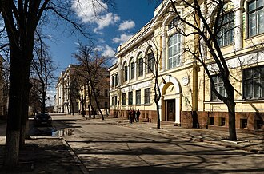

OTIUM is the practice of deliberate leisure. In the classical sense, otium is not escape from work but time when attention returns to memory, landscape, and thought — without a utilitarian deadline.
We shape routes for lingering, not for checklist tourism. The goal is presence in a place rather than consumption of sights.
OTIUM is not a tour operator. It is an invitation to walk, pause, and leave a route unfinished if the light on a façade deserves another minute.
Barabashov Market is one of Kharkiv's largest and most vibrant markets, offering a diverse array of goods from fresh produce to clothing and household items. Known for its bustling atmosphere, the market attracts both locals and visitors, making it a central hub of daily life in the city. Its extensive selection and lively environment provide a unique glimpse into the local culture and commerce. Barabashov Market was founded in the early 1990s. It is one of the largest markets in Kharkiv, offering a wide range of products.
Barabashov Market was established in the early 1990s, evolving from a smaller marketplace into a significant commercial center for Kharkiv. The market has undergone various changes over the years, reflecting the economic shifts in Ukraine and the region. Culturally, Barabashov Market plays a vital role in the daily lives of Kharkiv residents, serving as a gathering place where people not only shop but also socialize and exchange news. The market is a testament to the resilience and adaptability of the local community, showcasing the rich traditions of Ukrainian commerce and hospitality.
The Derzhprom building in Kharkiv is an iconic example of Constructivist architecture and one of the tallest buildings in Ukraine. Completed in 1928, it serves as a prominent symbol of the city's industrial heritage and modernist design. Visitors can admire its striking facade and learn about its role in the historical development of Kharkiv. Completed in 1928, it was one of the first skyscrapers in the Soviet Union. The building was designed by architect Sergei Serafimov and is a prime example of Constructivist architecture.
The Derzhprom building was constructed between 1925 and 1928 as part of the Soviet government's initiative to promote industrialization and modern architecture. Designed by architects Sergei Serafimov and his team, it was initially intended to house various state institutions and offices. The building's completion marked a significant moment in Kharkiv's history, as it was the first skyscraper in the Soviet Union and represented the aspirations of the early Soviet state. As a landmark of Soviet architecture, Derzhprom reflects the political and cultural shifts of the early 20th century in Ukraine. It played a critical role in the urban landscape of Kharkiv, which was the capital of the Ukrainian SSR from 1919 to 1934. The building has become a symbol of the city's identity and is often associated with the legacy of Soviet modernism, attracting both locals and tourists interested in architectural history.
The Dormition Cathedral, an architectural gem of Kharkiv, stands as a testament to the city's rich religious heritage. With its striking neo-Byzantine design and towering bell tower, it attracts visitors seeking both spiritual solace and artistic inspiration. The cathedral's serene atmosphere and beautiful frescoes make it a must-visit for anyone exploring Kharkiv. The cathedral was designed in a neo-Byzantine architectural style.
The Dormition Cathedral was originally constructed in the early 18th century, with its foundation laid in 1689. It has undergone several renovations and restorations over the years, particularly after suffering damage during World War II. The cathedral was consecrated in 1947, marking its significance in the post-war revival of religious life in the region. The Dormition Cathedral holds cultural and religious importance in Kharkiv, serving as a central place of worship for the Orthodox community. It is a symbol of resilience, reflecting the city's historical struggles and the revival of faith in the aftermath of conflict. The cathedral also plays a role in local traditions and celebrations, drawing both worshippers and tourists alike.
Freedom Square is the largest square in Ukraine and a central hub in Kharkiv, known for its impressive Soviet-era architecture and vibrant atmosphere. It serves as a gathering place for locals and visitors alike, often hosting events, festivals, and public demonstrations. The square is surrounded by significant buildings, making it a focal point of the city's social and cultural life. Freedom Square is the largest city square in Ukraine, covering an area of approximately 12 hectares. The square is surrounded by notable buildings, including the Kharkiv Regional State Administration and the House of State Industry.
Freedom Square was established in the 1920s and has since played a crucial role in the history of Kharkiv. It was the site of significant events, including the declaration of Kharkiv as the capital of the Ukrainian Soviet Socialist Republic in 1921. Over the decades, it has witnessed numerous protests and celebrations, reflecting the city's evolving political landscape. As a central public space, Freedom Square holds great political significance, serving as a site for protests and demonstrations, particularly during pivotal moments in Ukraine's history. Culturally, it is a symbol of Kharkiv's identity, surrounded by important institutions and frequently used for cultural events, thus reinforcing its role in the daily life of the city. The square embodies the spirit of community and resilience among the residents.
Gorky Park in Kharkiv is a vibrant urban oasis that offers a blend of recreational activities, lush greenery, and cultural events. This popular destination is perfect for families, joggers, and anyone looking to relax amidst nature. With various attractions, including amusement rides and art installations, Gorky Park is a hub of community life. Gorky Park covers an area of approximately 130 hectares. The park features a variety of attractions, including a large amusement park, sports facilities, and walking paths.
Gorky Park was established in the early 20th century, with its official opening taking place in 1926. Originally named after the famous Russian writer Maxim Gorky, the park has undergone several transformations over the decades, especially during the Soviet era when it was developed into a major public space. Culturally, Gorky Park serves as a key gathering place for the residents of Kharkiv, hosting numerous events, concerts, and festivals throughout the year. It reflects the city's commitment to public leisure and community engagement, making it an essential part of daily life in Kharkiv. The park's design and features also highlight the city's architectural heritage and artistic endeavors.
Address: вул. Жон Мироносиць 11, Харків, 61002, Україна | Period: 1893

The Kharkov Art Museum is one of Ukraine's oldest and most esteemed cultural institutions, showcasing a vast collection of artworks spanning centuries. It houses more than 40,000 pieces of artwork. Notable collections include paintings by Ivan Trush, Orest Murashko, and Vasyl Kopp. Regularly hosts temporary exhibits featuring international artists. Located on Khreshchatyk Street, the city's main thoroughfare. Open daily except Mondays.
Established in 1893, the museum was founded by local philanthropists to promote education and appreciation for fine arts. Over time it has grown into a significant hub for Ukrainian artistic expression, hosting exhibitions of both classical and contemporary works. Visitors come here to immerse themselves in the rich heritage of Ukrainian art and gain insight into its evolution over the years.
The Kharkiv Botanical Garden is a serene oasis in the heart of Kharkiv, showcasing a diverse collection of plant species from around the world. Visitors can enjoy peaceful walks among beautifully landscaped gardens, vibrant flowerbeds, and tranquil ponds. The garden serves as a popular spot for both relaxation and educational activities, making it a cherished destination for locals and tourists alike. Founded in 1804, it is one of the oldest botanical gardens in Ukraine. The garden features over 3,000 species of plants, including rare and endangered species.
The Kharkiv Botanical Garden was founded in 1804, making it one of the oldest botanical gardens in Ukraine. Established by the Kharkiv University, it has undergone various transformations and expansions throughout its history, particularly during the late 19th and early 20th centuries, when it became a center for scientific research and education. Culturally, the Kharkiv Botanical Garden plays a vital role in the daily life of the city, serving as a venue for educational programs, community events, and cultural festivals. It contributes to the city's heritage by promoting environmental awareness and appreciation of biodiversity. The garden is also a popular recreational area, reflecting the importance of green spaces in urban settings.
The Kharkov Choral Synagogue is a solemn and historically significant house of worship located in the heart of Ukraine's second largest city. Established in the late 19th century, it stands as one of the oldest synagogues in Eastern Europe. Constructed in 1894, it is one of the earliest surviving synagogues in Ukraine. It was designated a historical monument in 1974 by the Soviet government. Following extensive renovations completed in 2010, the synagogue now offers regular services once again. The interior includes intricate wood carvings and decorative details typical of Jewish synagogues. Visitors can attend services or explore its historical significance through guided tours.
Built in 1894, the Kharkov Choral Synagogue was originally designed by architect Joseph Kraemer to accommodate the growing Jewish community in Kharkov (as Kharkov was known then). The building combines elements of neo-Romanesque architecture with traditional Jewish architectural features, making it a unique blend of styles. It served as a cultural and religious center for Jews until World War II, when many members of the community were forced into exile or perished during the Holocaust. Today, the Kharkov Choral Synagogue serves as a symbol of resilience and continuity within the Ukrainian Jewish community.
The Kharkiv Circus is a vibrant venue located in the heart of Kharkiv, renowned for its captivating performances and unique atmosphere. This historic circus offers a variety of shows featuring acrobats, clowns, and animal acts, making it a popular destination for families and tourists alike. With its striking architecture and rich history, the circus is a cherished part of the city's cultural landscape. Established in 1960. Renovated multiple times to improve facilities.
The Kharkiv Circus was established in 1960 and has since become an iconic landmark in the city. Originally designed to host a wide range of circus performances, it has undergone several renovations to enhance its facilities and audience experience. The circus has played host to numerous national and international acts, contributing to its reputation as a premier entertainment venue in Ukraine. The Kharkiv Circus holds cultural significance as a center for performing arts in the region, reflecting the city's rich artistic heritage. It serves as a gathering place for families and communities, fostering a sense of joy and entertainment in daily life. The circus also plays a role in preserving traditional circus arts, contributing to the broader cultural fabric of Kharkiv.
The Kharkiv History Museum offers a fascinating glimpse into the rich past of Kharkiv and the surrounding region. Housed in a historic building, the museum features a diverse collection of artifacts that chronicle the city's development from its founding to the present day. Visitors can explore exhibitions that highlight key events, cultural heritage, and the evolution of daily life in Kharkiv. Founded in 1920, the museum is one of the oldest in Ukraine. The museum's collection includes over 200,000 items related to Kharkiv's history.
Established in 1920, the Kharkiv History Museum has played a crucial role in preserving the city's historical narrative. The museum's collection includes items from various periods, reflecting the city's transformation through significant events such as the establishment of Kharkiv as a major industrial center in the 19th century and its role during the Soviet era. The Kharkiv History Museum serves as an important cultural institution, showcasing the city's heritage and contributing to the understanding of its historical context. It plays a vital role in educating the public about Kharkiv's past, fostering a sense of identity and pride among residents. The museum also reflects the broader cultural landscape of Ukraine, emphasizing the importance of local history in the national narrative.
The Kharkiv Opera House is a stunning architectural gem located in the heart of Kharkiv, offering a rich program of operas, ballets, and concerts. With its opulent interiors and grand performances, it serves as a cultural hub for both locals and visitors. The venue is not only a place for artistic expression but also a symbol of the city's vibrant cultural scene. Founded in 1925, with the current building completed in 1955. The architecture features neoclassical elements, designed to reflect the cultural aspirations of the time.
The Kharkiv Opera House was founded in 1925, although its origins trace back to earlier theatrical traditions in the city. The building itself was constructed between 1947 and 1955, featuring a neoclassical design that reflects the aspirations of the post-war era. It has since hosted numerous significant performances and has been a key venue for the development of opera and ballet in Ukraine. Culturally, the Kharkiv Opera House plays a vital role in the artistic landscape of the city, showcasing both national and international talent. It is a center for cultural heritage, contributing to the preservation of Ukrainian traditions in performing arts. The opera house is a gathering place for the community, fostering a love for the arts and enriching daily life in Kharkiv.
The Kharkiv Polytechnic Institute, established in 1885, is one of Ukraine's leading technical universities and a prominent landmark in Kharkiv. Known for its striking architecture and rich academic tradition, the institute attracts students from across the globe. Visitors can explore its historic campus and appreciate its role in shaping the engineering and technological landscape of the region. Founded in 1885 as a technical school. One of the oldest technical universities in Ukraine. Contributes to the education of engineers and scientists.
Founded in 1885, the Kharkiv Polytechnic Institute was initially established as a technical school to meet the growing demand for skilled engineers in the industrializing Russian Empire. Over the years, it evolved into a full-fledged university, contributing significantly to the education of engineers and scientists in Ukraine. The institute has played a crucial role in various technological advancements and has been a center for research and innovation. The Kharkiv Polytechnic Institute holds cultural significance as a hub for education and innovation in Ukraine. It has fostered a spirit of inquiry and creativity, influencing the daily lives of many through its alumni who have made notable contributions in various fields. The institute's architectural style and historical importance reflect the rich heritage of Kharkiv, making it a key landmark in the city.
Kharkov Railway Station is the main hub for train travel in Ukraine's second largest city. Located at the heart of Kharkov's historical center, it serves as a key transportation node connecting regional cities and major destinations across the country. Opened in 1903 as the main rail terminal for Kharkov province. Designed in the Neo-Russian architectural style with intricate facades and domes. Serves over 400 trains daily, making it one of the busiest stations in Eastern Europe. Features a grand hall with marble floors and chandeliers, reflecting its status as a cultural icon. Hosted important political meetings and gatherings throughout Soviet and post-Soviet history.
Built in 1903 during the Russian Empire era, Kharkov Railway Station was designed by architect Ivan Klyuvger in the Neo-Russian style. It became a symbol of modernization and progress in early 20th-century Kharkov. The station underwent significant renovations after World War II, retaining its distinctive architecture while accommodating modern infrastructure. Visitors can appreciate the architectural beauty and historical significance of the station, which remains one of Kharkov’s most iconic landmarks.
Kharkiv Zoo, one of the oldest zoos in Ukraine, offers a delightful escape into nature right in the heart of the city. Home to a diverse range of animals, it provides educational programs and recreational activities for visitors of all ages. The zoo's lush landscapes and well-maintained habitats make it a popular destination for families and animal lovers alike. Founded in 1895, making it one of the oldest zoos in Ukraine. Home to over 300 species of animals, including both native and exotic species.
Kharkiv Zoo was founded in 1895, originally as a private collection of exotic animals. Over the years, it has expanded significantly and undergone various renovations, adapting to modern standards of animal care and visitor experience. The zoo has faced challenges, particularly during the tumultuous periods of the 20th century, but it has remained a beloved institution in the city. Culturally, Kharkiv Zoo plays an important role in the daily life of the city's residents, serving as a recreational space and a place for education about wildlife and conservation. It reflects the city's commitment to preserving biodiversity and fostering a connection between people and nature. The zoo also hosts events that celebrate local traditions and promote environmental awareness.
The Lopan River embankment in Kharkiv offers a picturesque setting for leisurely strolls and outdoor activities. This scenic area is lined with parks and recreational spaces, making it a popular spot for both locals and visitors to relax and enjoy nature. The embankment serves as a vital connection to the city's vibrant cultural life, often hosting events and gatherings. The Lopan River flows through the city of Kharkiv, contributing to its landscape. The embankment features parks and pathways that are popular for walking and cycling.
The Lopan River has played a significant role in the history of Kharkiv since the city's founding in the 17th century. The river was crucial for trade and transportation, contributing to the city's growth and development over the centuries. Key events, including various floods and urban development projects, have shaped the embankment into the recreational area it is today. Culturally, the Lopan River embankment is integral to daily life in Kharkiv, serving as a communal space where people engage in leisure activities, exercise, and social events. The area reflects the city's heritage and is a testament to its evolving relationship with nature. While not a site of religious significance, the embankment is often used for various public celebrations and gatherings, highlighting its role in the community.
Metalist Stadium, located in Kharkiv, is a prominent sports venue known for hosting football matches and various athletic events. With a seating capacity of over 40,000, it serves as the home ground for the local football club FC Metalist Kharkiv. The stadium is celebrated for its modern design and vibrant atmosphere during matches, making it a key destination for sports enthusiasts. Opened in 1926, Metalist Stadium has a seating capacity of over 40,000. The stadium underwent a major renovation in 2009 to improve its facilities.
Metalist Stadium was originally opened in 1926 and has undergone several renovations since then, most notably in 2009 when it was modernized to meet international standards. The stadium has hosted numerous significant events, including matches during the UEFA Euro 2012 tournament. As a major sports landmark in Kharkiv, Metalist Stadium plays a vital role in the city's cultural life, serving as a gathering place for fans and a venue for community events. It reflects the city's passion for football and sports in general, contributing to local identity and pride. The stadium's significance is further enhanced by its role in fostering community spirit and promoting healthy lifestyles among residents.
The Mirror Stream is a stunning landmark located in Kharkiv, known for its elegant fountains and reflective pools. This serene park area serves as a popular gathering spot for locals and tourists alike, offering a picturesque setting for relaxation and socializing. Its beautiful design and tranquil atmosphere make it a must-visit destination in the city. The Mirror Stream was designed by architect V. G. Zabolotny. It was inaugurated in 1947 as part of post-war reconstruction.
The Mirror Stream was inaugurated in 1947 as part of the reconstruction efforts following World War II. Designed by the architect V. G. Zabolotny, it features a unique combination of water and light that enhances the beauty of the surrounding park. Over the years, it has become an iconic symbol of Kharkiv. Culturally, the Mirror Stream holds a special place in the hearts of Kharkiv residents, often serving as a backdrop for public events and celebrations. The site is also a popular location for artistic performances and gatherings, reflecting the city's vibrant community life. While it does not have direct political or religious significance, it stands as a testament to the resilience and spirit of the people of Kharkiv.
The Mirror Stream fountain, located in Kharkiv's central park, is a stunning architectural feature known for its reflective water surface and artistic design. This iconic landmark not only serves as a popular gathering spot for locals and tourists alike but also enhances the beauty of the surrounding landscape. With its elegant sculptures and serene ambiance, it is a perfect place for relaxation and contemplation. The fountain was inaugurated in 1947. It features a series of sculptures that enhance its aesthetic appeal.
The Mirror Stream fountain was constructed in 1947 as part of the post-World War II reconstruction efforts in Kharkiv. Designed by the architect V. S. Kolesnikov, it was intended to symbolize the city's revival and resilience. The fountain has since become a cherished part of Kharkiv's urban landscape. Culturally, the Mirror Stream fountain holds a special place in the hearts of Kharkiv residents, often serving as a backdrop for various public events and celebrations. It is a symbol of the city's artistic heritage and is frequently featured in photographs, representing Kharkiv's identity. The fountain also plays a role in daily life, providing a tranquil space for relaxation and social interaction.
Pokrovsky Monastery, located in Kharkiv, is a serene and historic site that offers visitors a glimpse into the region's rich religious heritage. This active monastery is known for its beautiful architecture and tranquil surroundings, making it a popular destination for both pilgrims and tourists alike. The site serves as a peaceful retreat, inviting reflection and spiritual contemplation. Founded in 1655, the monastery has been a center for Orthodox Christianity in Kharkiv. The site has undergone several renovations, particularly after conflicts that caused damage.
Founded in the early 17th century, Pokrovsky Monastery has played a significant role in the spiritual life of Kharkiv. It was established in 1655 and has undergone various renovations and restorations throughout its history, particularly after suffering damage during conflicts. The monastery has been a center for Orthodox Christianity in the region for centuries. Pokrovsky Monastery holds cultural and religious importance as a symbol of the Orthodox faith in Kharkiv. It serves as a place of worship and community gathering, reflecting the city's historical ties to the church. The monastery's architecture and art contribute to Kharkiv's cultural heritage, making it a significant landmark in the city.
Pushkinskaya Street is one of Kharkiv's most prominent thoroughfares, known for its vibrant atmosphere and historical architecture. Lined with cafes, shops, and cultural venues, it serves as a hub for both locals and visitors. The street embodies the spirit of the city, showcasing a blend of modern life and historical significance. Pushkinskaya Street is named after the Russian poet Alexander Pushkin. The street features a mix of architectural styles, including neoclassical and modernist buildings.
Pushkinskaya Street has its origins in the early 19th century, evolving into a key part of Kharkiv's urban landscape. Named after the famous Russian poet Alexander Pushkin, the street has witnessed significant events throughout the city's history, including periods of growth and cultural flourishing. Culturally, Pushkinskaya Street is a vital part of Kharkiv's identity, reflecting the city's artistic heritage and daily life. It is home to various cultural institutions and events that celebrate local traditions. While it does not hold notable political significance, it serves as a gathering place for community events and expressions of local culture.
Shevchenko Garden is a serene urban park located in the heart of Kharkiv, offering a lush escape from the bustling city life. This green oasis features walking paths, beautiful flower beds, and tranquil ponds, making it a popular spot for both locals and visitors. The park is an ideal place for leisurely strolls, picnics, and enjoying cultural events throughout the year. Established in the mid-19th century. Named after Taras Shevchenko, a prominent Ukrainian poet. Features walking paths, flower beds, and ponds.
Shevchenko Garden was established in the mid-19th century, with its founding attributed to the efforts of local citizens who sought to create a public space for recreation and relaxation. The park has undergone various renovations and expansions over the years, reflecting the changing needs and tastes of Kharkiv's residents. Culturally, Shevchenko Garden plays a vital role in the daily life of Kharkiv, serving as a venue for festivals, concerts, and community gatherings. The park is named after the renowned Ukrainian poet Taras Shevchenko, symbolizing the city's connection to Ukrainian heritage and literature. It stands as a testament to the importance of green spaces in urban environments, fostering community interaction and cultural expression.
Sumska Street is one of Kharkiv's main thoroughfares, known for its vibrant atmosphere and historical architecture. Stretching through the heart of the city, it serves as a hub for shopping, dining, and cultural activities, making it a must-visit for both locals and tourists. The street is lined with significant buildings that reflect the city's rich heritage and modern developments. Sumska Street is one of the longest streets in Kharkiv. It features a mix of architectural styles, including neoclassical and modernist buildings.
Sumska Street has its roots in the early development of Kharkiv, which was founded in the 17th century. Over the years, it has witnessed numerous key events, including the establishment of the city as a cultural and educational center in the 19th century. The street has evolved significantly, especially during the Soviet era, when it became a focal point for urban development. Culturally, Sumska Street is vital to Kharkiv's identity, showcasing a blend of historical and modern influences. It is home to various theaters, galleries, and cafes that contribute to the city's vibrant arts scene. The street also plays a role in daily life, serving as a gathering place for residents and visitors alike, reflecting the dynamic spirit of Kharkiv.
The V. N. Karazin University main building is a striking example of neoclassical architecture located in the heart of Kharkiv. Established in 1804, it serves as a prominent educational institution and a symbol of the city's rich academic heritage. Visitors can admire its grand facade and explore the vibrant campus that plays a vital role in the city's cultural and intellectual life. Founded in 1804, making it one of the oldest universities in Ukraine.
Founded in 1804, V. N. Karazin University is one of the oldest universities in Ukraine. It was named after its founder, Vasily Karazin, who was instrumental in its establishment. Over the years, the university has undergone significant changes, including the expansion of its faculties and the development of its research programs, contributing to the evolution of higher education in the region. V. N. Karazin University holds considerable cultural significance as a center for education and research in Ukraine. It has produced numerous influential figures in various fields, including science, literature, and politics. The university's role in fostering intellectual discourse and cultural development has made it a cornerstone of Kharkiv's identity, reflecting the city's commitment to education and progress.
The Young Guard monument in Kharkiv is a striking sculpture dedicated to the young Soviet partisans who fought against Nazi occupation during World War II. This memorial serves as a poignant reminder of bravery and sacrifice, capturing the spirit of youth and resistance. Located in a prominent area, it attracts both locals and visitors, offering a place for reflection and remembrance. Unveiled in 1970. Honors the young partisans of the Young Guard during World War II.
The Young Guard monument was unveiled in 1970 to honor the members of the Young Guard, a group of young partisans who played a significant role in the resistance against German forces during the war. Their courageous actions are celebrated in Soviet history, and the monument serves as a tribute to their legacy. Politically, the monument reflects the Soviet narrative of heroism and sacrifice during World War II, symbolizing the fight against fascism and the valor of youth. Culturally, it stands as an important piece of heritage in Kharkiv, representing the city's historical commitment to remembering its past and honoring those who contributed to its defense. The monument is a focal point for commemorative events and serves as a gathering place for the community, reinforcing collective memory and identity.